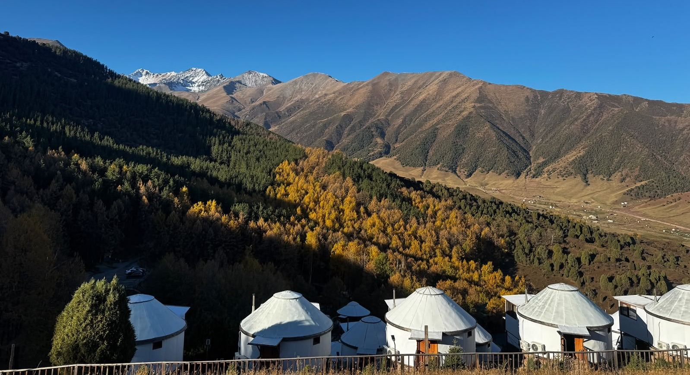
Chunkurchak
山谷豪華住宿和騎馬體驗。群山環繞，視野開闊，在自然裡放慢腳步，迎接旅程第一夜。
這個行程專為喜愛慢步調、放鬆、親近大自然與遊牧文化的旅人所設計，帶你深入探索吉爾吉斯最純粹、最動人的山谷與湖泊。不只走訪經典必去景點，更加入 BekRuby 獨家安排，讓旅程多一份溫度與深度。
我們採精緻小團制，每年開團數量有限，重視旅遊品質與體驗深度，確保每位旅人都能被好好照顧。
特別適合親子家庭或長輩同行，每日車程安排適中，保留充足時間讓大家欣賞山水景色、拍攝晨昏光影，或單純放慢腳步，在自然中好好放空與休息。

山谷豪華住宿和騎馬體驗。群山環繞，視野開闊，在自然裡放慢腳步，迎接旅程第一夜。
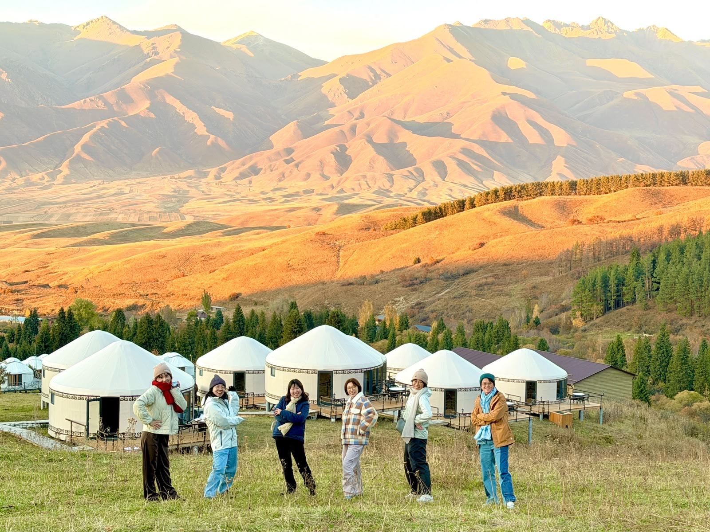
春天的 Chon Kemin，山谷換上新綠、野花盛開，感受吉爾吉斯鄉村最真實的日常節奏。
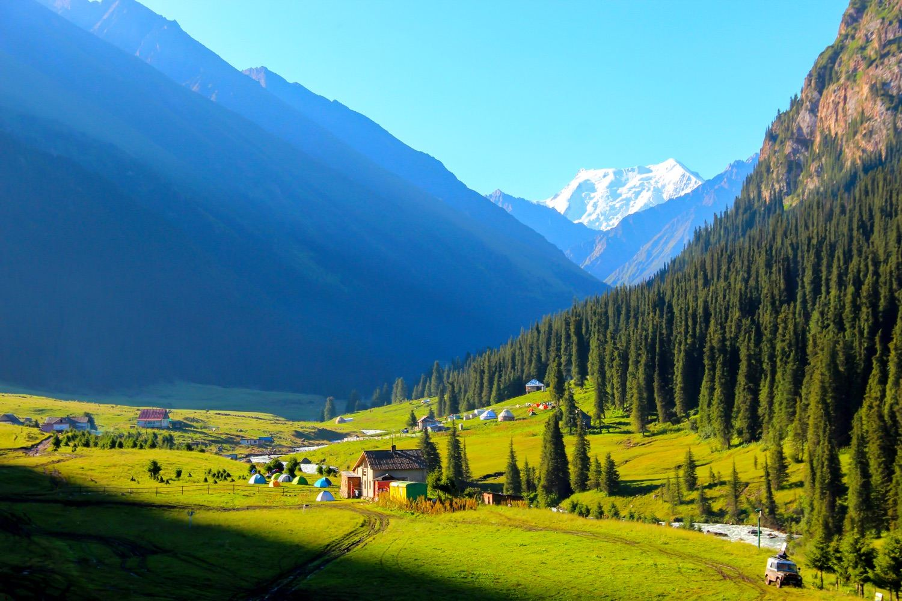
搭越野車深入天山谷地，天然溫泉從地底湧出，是整趟旅程最讓人放鬆的時刻。
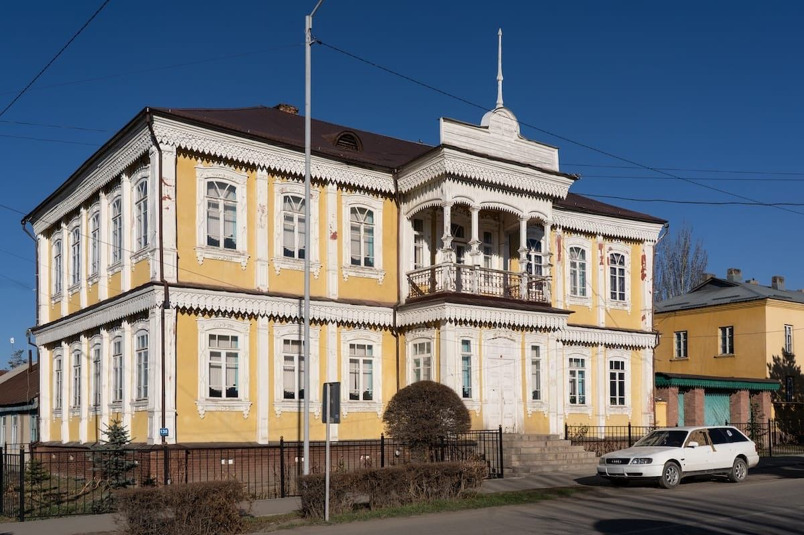
貝殼與嚕比長期生活的城市。在冷杉森林健行野餐，用在地節奏感受山城的溫度。
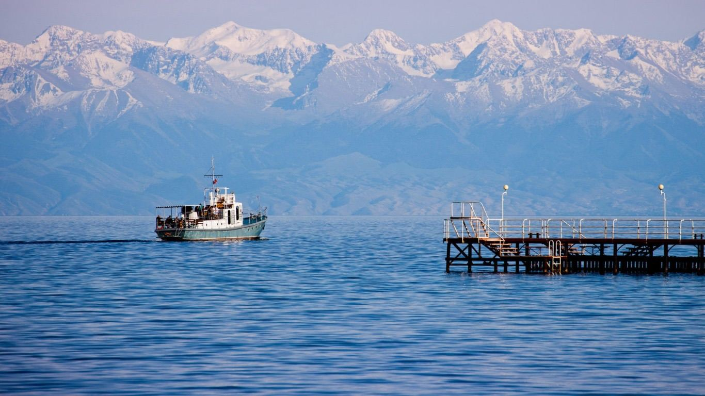
草原、紅岩峽谷、湖畔森林、雪山草原依序展開，吉爾吉斯最代表性的風景一次收齊。
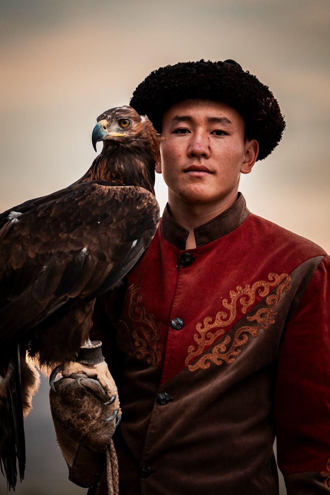
獵鷹文化體驗，以及貝殼媽媽的手藝與傳統舞蹈教學。
我們會依照季節、天氣與自然狀況進行彈性調整，確保每一趟旅程，都在最適合的時間，看見最美的風景、體驗最深刻的活動。
報名前請詳細閱讀旅行 QA。 前往旅行 QA →
喜愛慢步調、放鬆、親近大自然與遊牧文化的旅人。特別適合親子家庭或長輩同行，每日車程安排適中。
每年開團數量有限，重視旅遊品質與體驗深度，確保每位旅人都能被好好照顧。
全年皆可。行程多安排於中低海拔地區，四季各有風景，並依季節、天氣與自然狀況彈性調整。
📅 2027 拼團：開放報名中
點此報名 →
📅 2027 私人團：已截止報名
想規劃 2028 年私人團，歡迎來信 service@go2mountains.com 登記
6 人以上即可成行，全年皆可出發、時間彈性。行程可依季節、體力、興趣客製調整，適合家庭、朋友、小團深度旅行。
報名前請先填寫行程評估問卷（約 2 分鐘），通過評估後即可直接填寫報名表單。有任何問題，也歡迎來信 service@go2mountains.com。
| 天 | 住宿 | 淋浴 | 廁所 | Wi-Fi / 訊號 |
|---|---|---|---|---|
| 第 0 天 | 比什凱克飯店（已包含） | 房內熱水淋浴 | 有，房內 | Wi-Fi |
| 第 1 天 | Chunkurchak 山谷的山中度假村 | 有，房內；熱水有限，請勿使用太久 | 有，房內 | 有 |
| 第 2 天 | Chon Kemin 山谷擁有美麗山景的現代氈房住宿 | 有，房內；熱水有限，請勿使用太久 | 有，房內 | 有 |
| 第 3 天 | Altyn Oimok 或 Elestet，Bokonbaevo | 共用；熱水有限，請勿使用太久 | 共用 | 有 |
| 第 4 天 | 78 Hotel 或 Matsunoki，Karakol | 有，房內；熱水有限，請勿使用太久 | 有，房內 | 有 |
| 第 5 天 | 78 Hotel 或 Matsunoki，Karakol | 有，房內；熱水有限，請勿使用太久 | 有，房內 | 有 |
| 第 6 天 | Altyn-Arashan 山中民宿的氈房 | 共用；熱水有限，請勿使用太久 | 共用 | 沒有手機訊號 |
| 第 7 天 | Cholpon-Ata 民宿 | 有，房內；熱水有限，請勿使用太久 | 有，房內 | 有 |
| 第 8 天 | 行程結束，或入住比什凱克的飯店 | 有，房內 | 有，房內 | 有 |
本行程以伊塞克湖為主，不會前往頌湖（Song-Kul）；以下比較僅供參考，幫助你選擇適合自己的行程。
雪山開始融雪，草原漸綠，山谷中盛開野花與罌粟花海（五月中）。白天涼爽，早晚仍偏冷，建議攜帶保暖衣物。適合輕鬆健行、賞花、拍攝晨曦與夕陽。
山谷與湖泊最為翠綠，伊塞克湖氣候溫暖，遊牧人家搬到高山放牧。白天溫暖舒適，夜晚微涼。適合騎馬、遠足、湖邊放鬆、參與遊牧文化體驗。
山谷轉為一片新綠，野花與果樹花陸續綻放，遠方雪山仍覆蓋白雪。天氣清爽舒適，遊客相對較少，是健行、拍照和慢遊的好時節。
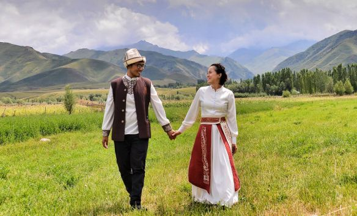
旅行，不只是抵達一個新地方，而是讓一段旅程，慢慢走進你的生命。對我們來說，吉爾吉斯不是旅遊目的地，而是我們的故鄉、我們的日常、我們的故事開始的地方。
我們來自台灣與吉爾吉斯的家庭，因為熱愛這片土地，選擇用陪伴、用記錄、用真心，把這裡的風、山谷、文化與人情分享給你。在這趟旅程裡，你會走進我們從小熟悉的村落、拜訪我們一路信任的朋友，吃到家人親手準備、承載記憶的味道。
我們相信旅行不該只是「打卡」與「收集景點」，而是一種看見生命、看見自己的方式。慢一點、深一點、真實一點——這就是貝殼嚕比的生活風格旅行。
期待在雪山、草原、湖畔或森林裡，與你相遇。歡迎你來吉爾吉斯。
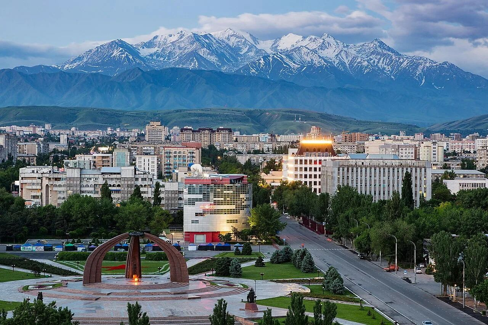
抵達比什凱克
行程全部從 Day 0 開始（住宿包含在行程內）。抵達比什凱克後入住首都的飯店，好好洗個舒服的熱水澡，迎接吉爾吉斯的旅程。
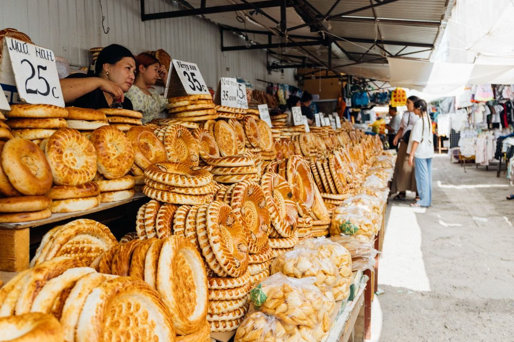
Bishkek → Osh Bazaar → Chunkurchak
從首都日常出發，走進高山山谷，在遼闊草原騎馬，正式開啟中亞之旅。
早餐後，導遊會先用地圖講解八天的行程路線與今天的安排。
上午走進熱鬧的 Osh Bazaar 市集：香料、果乾、肉品區，還有從土窯裡現烤出爐的饢餅，在人群之間感受最真實的吉爾吉斯城市生活。
中午在一間傳統吉爾吉斯風格的餐廳享用午餐，以氈房為靈感的建築，搭配道地料理。
午後驅車約一小時前往 Chunkurchak 山谷，換上馬匹騎行約 2 小時深入山谷。春天的山坡與草地一片新綠、野花點綴其間，把城市的節奏留在身後。
傍晚入住山谷裡的山中度假村，享用晚餐、好好休息，度過旅程的第一個夜晚。
小提醒
今天會騎馬，請穿長褲並做好防曬。
Chunkurchak → Burana Tower → Chon Kemin
山中晨景、絲路古塔，以及 Chon Kemin 寧靜的夜晚。
早起的話，先到觀景點拍照並短程健行，再享用早餐。
接著前往 Burana Tower。這座矗立在草原上的古塔，曾是絲綢之路古城 Balasagun 的一部分。登上古塔眺望平原與遠方天山，聽導遊講述曾在這裡繁盛的絲路文明。
午餐在 Burana 附近一戶當地人家中，享用主人親手準備的家常料理。
午後繼續前往 Chon Kemin 山谷。入住擁有美麗山景的現代氈房住宿，晚餐前有時間在草原上散步、欣賞雪山。
Chon Kemin → Bokonbaevo
今天從山裡開始。早餐後在 Chon Kemin 山谷晨間健行，慢慢走過山谷裡的草甸與森林，呼吸清新的山間空氣，在出發前好好欣賞這片山景。
中午在 Chon Kemin 住宿享用家常午餐，餐後驅車前往伊塞克湖南岸的 Bokonbaevo。沿途景色從北部的山谷與草原，慢慢轉換成伊塞克湖一帶更加遼闊的山湖風景；途中每隔兩至三小時會安排停車休息，讓移動保持舒服的節奏。
下午與當地獵鷹人見面，觀看傳統獵鷹訓練示範。在獵人的介紹與示範下，近距離認識這項流傳已久的遊牧傳統。對獵人而言，金雕不只是狩獵的工具，更是需要長時間相處、訓練並建立默契的夥伴，也是一項代代傳承的生活技藝。
晚餐在當地民宿享用家常料理，之後入住 Bokonbaevo 的 Altyn Oimok 或 Elestet，在伊塞克湖南岸好好休息，感受不同於城市的鄉村生活。
小提醒
途中每隔兩至三小時會安排停車休息，讓長途移動保持舒服的節奏。
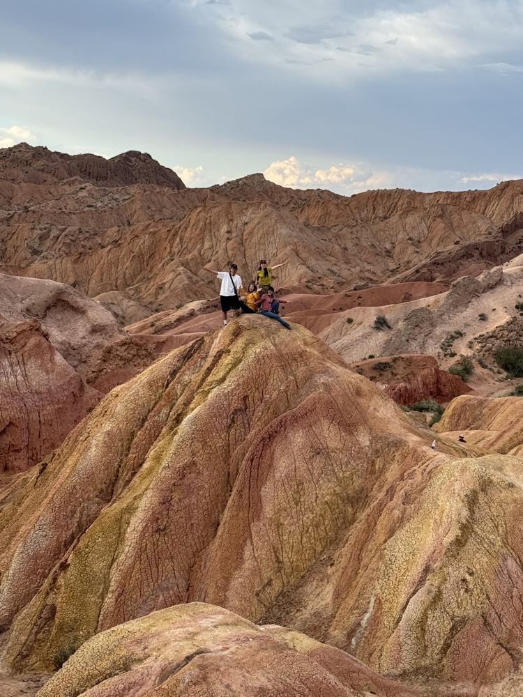
Bokonbaevo → 伊塞克湖畔 → Skazka Canyon → Barskoon → Karakol
彩色峽谷、森林瀑布：整趟旅程地貌變化最豐富的一天。
早餐後，先到伊塞克湖畔享受早晨時光，在清澈的湖水中游泳，感受高山湖泊的清涼與遼闊。
接著前往 Skazka 童話峽谷（Fairy Tale Canyon）。橙紅、土黃與淺褐色的岩層，經過長年風雨侵蝕，形成宛如城堡、山脊與奇幻生物般的特殊地貌。站在高處遠望，身後就是湛藍的伊塞克湖，山海交織出令人驚嘆的景色。
中午走進當地民宿，享用一頓充滿家庭風味的家常料理，品嚐吉爾吉斯人的日常飲食。
午後前往 Barskoon 山谷，沿著松林與山間溪流步道健行約 2 小時，前往著名的 Barskoon 瀑布。沿途林木茂密、溪水潺潺，健行 1–2 小時，從不同角度欣賞山谷風光。
傍晚驅車前往 Karakol。晚上安排在東干族家庭享用晚餐，或選擇當地特色餐廳，透過不同族群的料理，繼續認識這座融合多元文化的城市。
小提醒
今天是戶外活動的一天，較晚入住（約 21:00）。請準備泳衣、毛巾、防曬與帽子。
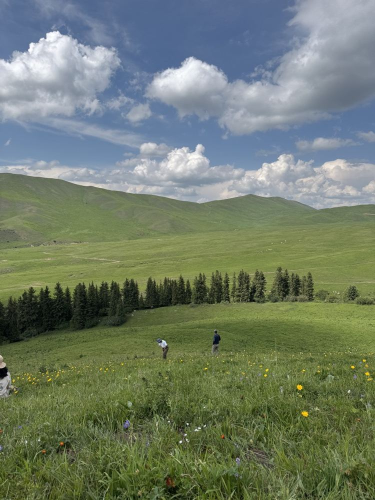
Karakol → Karakol 峽谷 → Karakol
卡拉科爾峽谷健行、A Taste of Kyrgyzstan 山谷野餐，以及多元文化的 Karakol。
早餐後前往 Karakol 峽谷，沿著茂密的雲杉林與山間溪流健行約 2.5 小時，感受天山山谷的清新與寧靜。
午餐時間，我們在溪谷旁安排一場特別的 A Taste of Kyrgyzstan 山谷風味野餐。我們準備了來自當地家庭與市集的特色食材，包括當地媽媽親手製作的果醬、辣醬、番茄甜椒醬，傳統手工香腸、馬肉、高山蜂蜜、當季水果與傳統麵包等地方美食。一邊品嚐食物，一邊聽聽食材背後的故事，認識吉爾吉斯家庭的飲食習慣與傳統。
下午回到 Karakol 市區，探索這座融合多元文化的城市，參觀兩座極具特色的建築：由俄羅斯移民建造的木造聖三一大教堂，以及東干族以不用一根釘子的傳統工法，融合中國建築與伊斯蘭藝術風格建造的東干清真寺。接著前往「一村一品」商店，欣賞當地手工藝品與特色產品，再到市集採買隔天旅途所需的零食。
晚餐品嚐 Karakol 著名小吃：酸香微辣的涼粉（Ashlan-fu），搭配香酥可口的馬鈴薯餡餅（Pirozhki），為充實的一天畫下美味句點。
小提醒
今天的順序會依天氣彈性調整：Karakol 峽谷健行與野餐，可能安排在早餐後，也可能在午餐後，另一個時段則參觀市區。
明天（第 6 天）會上山到 Altyn-Arashan 住一晚，今晚請先準備一個小包，裝過夜需要的物品；大行李會留在車上。
Karakol → Ak-Suu 溫泉 → Altyn-Arashan
早上泡溫泉，再沿著崎嶇山路上到雪峰下的天山秘境。
早餐後到 Ak-Suu 溫泉泡湯放鬆約兩小時。
接著搭 4x4 越野車（四人以上改蘇聯軍卡）沿著 30 公里的崎嶇山路上到 Altyn-Arashan，這座海拔約 2,500 公尺的高山山谷，木屋與氈房散落在草甸與雪峰之間。
在民宿吃完午餐後，下午可以放鬆或在山谷輕鬆健行。晚餐由民宿提供，夜晚沒有光害，非常適合觀星。
小提醒
越野路段非常顛簸；四人以上會改搭蘇聯軍卡。記得帶泳衣泡溫泉。
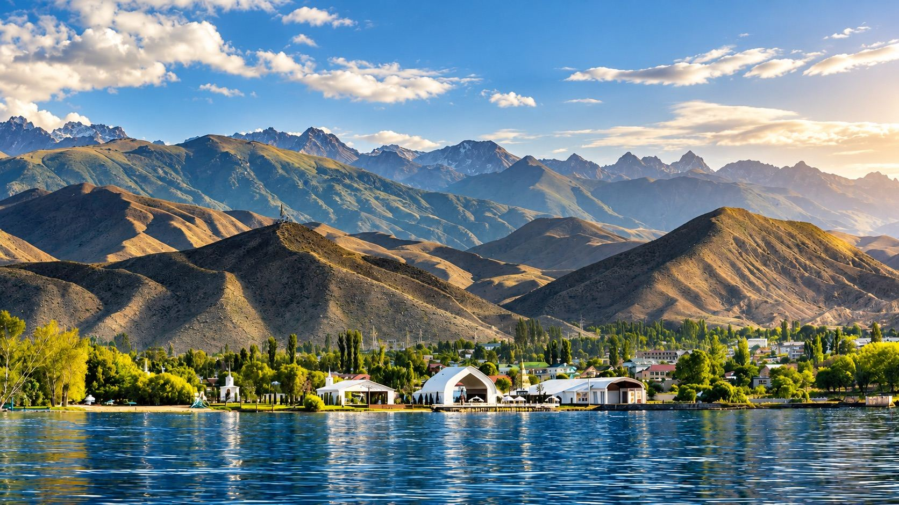
Altyn-Arashan → Aksu 村 → Cholpon-Ata
從高山走下來，回到伊塞克湖畔。
早餐後，帶著山中的美好回憶，告別 Altyn-Arashan。
今天可以選擇用健行的方式下山，沿著美麗的山谷步行約 2.5 小時，前往半山腰的觀景點，再由車輛接送下山；也可以選擇全程搭車，輕鬆返回山腳。
抵達 Aksu 村後，在當地魚料理餐廳享用午餐，品嚐伊塞克湖周邊的地方風味。
午後沿著伊塞克湖北岸行駛約三小時，前往湖畔小鎮 Cholpon-Ata。沿途欣賞湖光山色，感受從高山逐漸回到湖畔的景色變化。
晚餐安排在當地人喜愛的吉爾吉斯清真餐廳，品嚐道地的地方料理，讓我們有機會體驗當地穆斯林飲食文化。
今晚入住 Cholpon-Ata 民宿。
Cholpon-Ata → Balykchy → 比什凱克
乘船出湖、古老岩畫，然後返回城市。
早餐後，先到伊塞克湖北岸散步約 1 小時，享受湖畔清晨的寧靜，欣賞遠方天山雪峰與遼闊湖面的景色。
接著前往碼頭，搭船出湖約 1 小時。從不同角度欣賞伊塞克湖，感受北岸雪山倒映在湛藍湖面上的壯麗景色，為這趟湖畔旅程留下特別的回憶。
靠岸後，前往 Cholpon-Ata 露天岩畫區，探索散落在草原上的古老石刻。這裡保存了從青銅時代到早期遊牧時期的岩畫，描繪著古人的生活、狩獵活動與動物世界，讓我們一窺數千年前生活在這片土地上的人們。
接著驅車前往 Balykchy，在當地享用午餐。
午後啟程返回首都比什凱克，傍晚抵達城市，晚上安排一頓告別晚餐，與旅途中認識的風景、文化和人們道別，為這趟吉爾吉斯之旅畫下美好的句點。
行程結束後，我們會送您回首都的飯店休息（若您搭乘晚班飛機，也可以免費送您到機場）。
在旅途中，你可能會品嚐到以下經典料理：
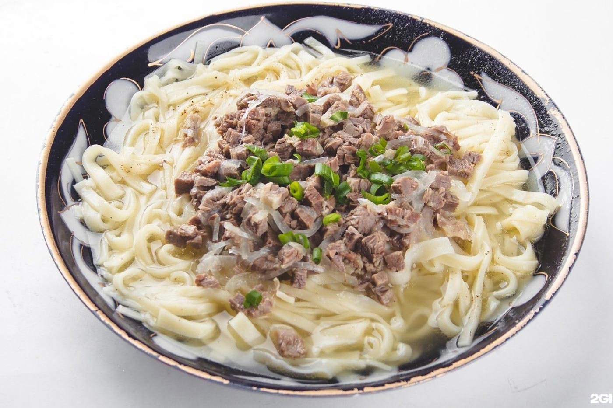
手切麵佐清燉肉。最具代表性的吉爾吉斯料理，象徵節慶與款待。

炒羊肉／牛肉，搭配馬鈴薯與洋蔥，是遊牧人的家常菜。
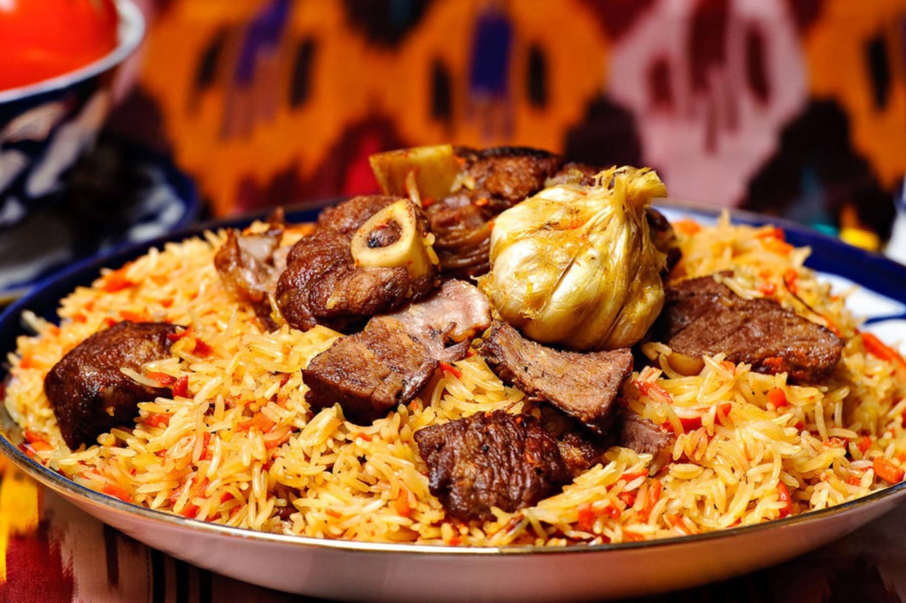
用胡蘿蔔、肉、米飯燉煮而成，香氣濃郁。
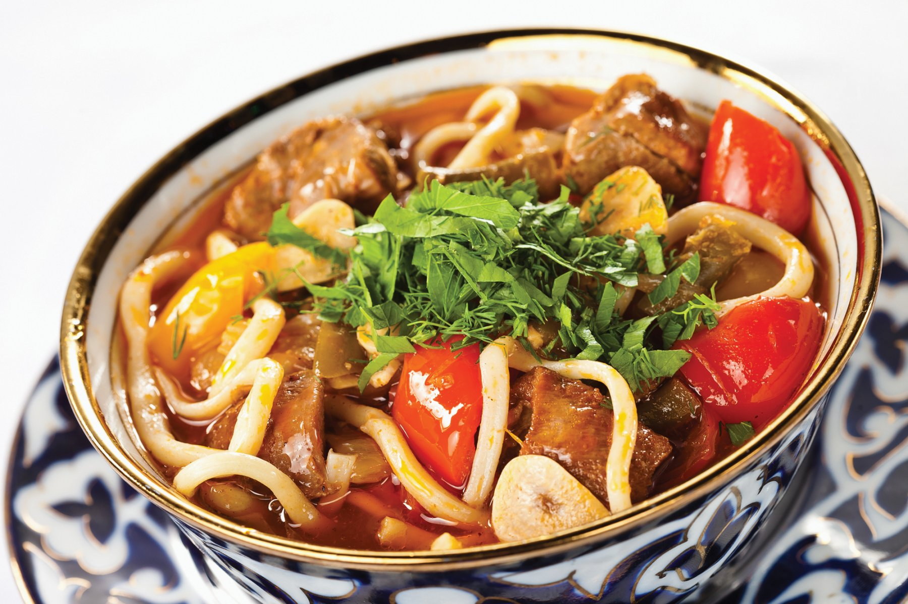
手工拉麵加入蔬菜與牛肉，是中亞常見的麵食。
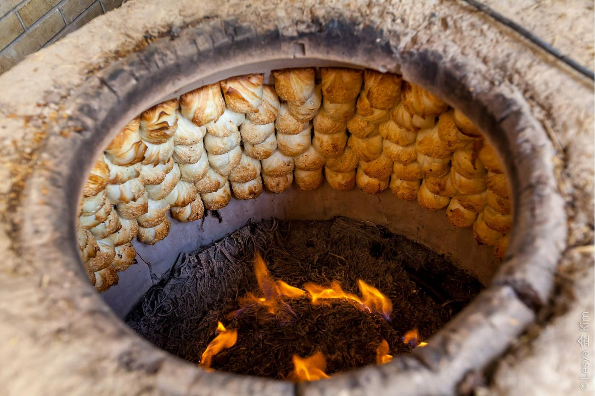
以傳統土窯烘烤，外酥內多汁。
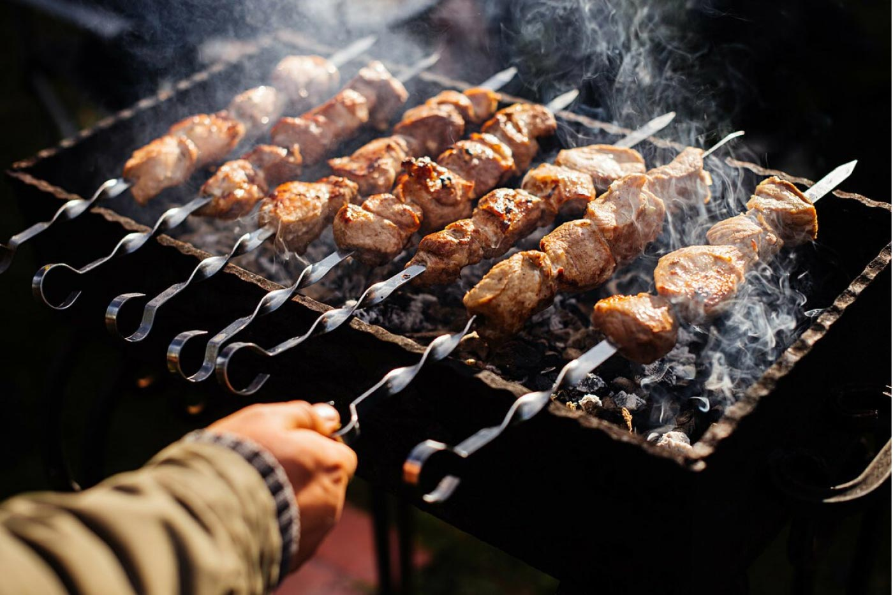
露天炭烤，是旅途中最常見的香味。
6 人即可獨立成團，享受專屬私密節奏
適合誰
經濟實惠，結交世界旅伴
適合誰
成團人數：滿 10 人開團，上限 12 人，小團精緻不擁擠
溝通零時差，聽懂中亞歷史與文化故事，最適合帶長輩、小孩同行的家庭。
國際化專業嚮導，適合英文溝通自如、喜歡與全球旅伴交流、追求深度的你。